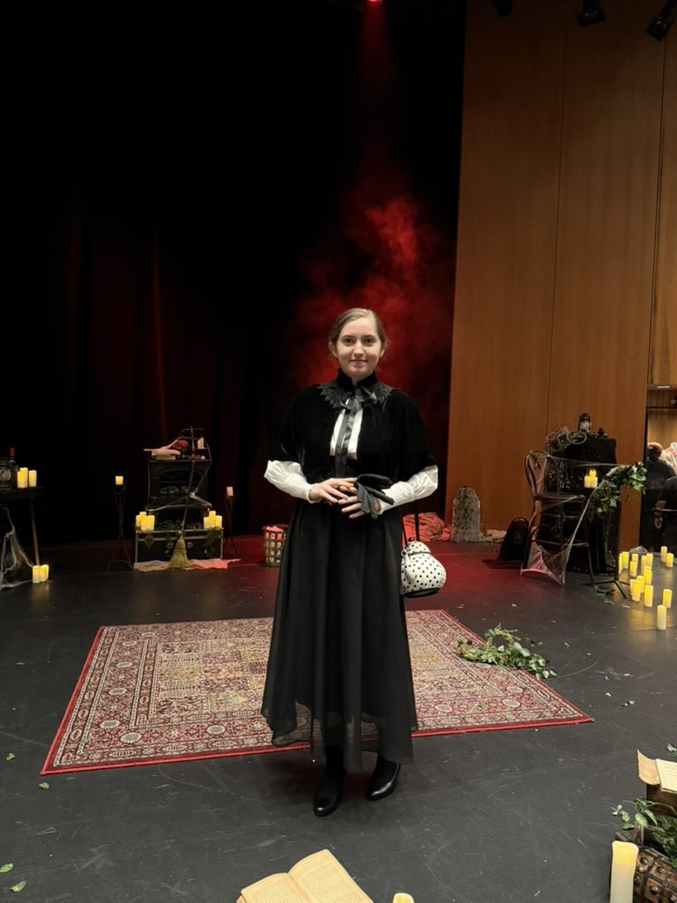
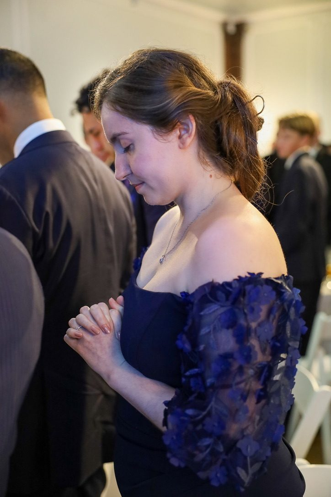

Actor · Model
LeAnne
Weber
Film, theatre, and devised work. Based in Albany, New York.

Actor · Model
Film, theatre, and devised work. Based in Albany, New York.
LeAnne Weber is an actor and theatre-maker with a B.A. in Performing Arts from Wells College, where she trained in Hagen technique with Prof. Siouxsie Easter. She is a two-time TANYS Award recipient, for Ensemble Acting in Eurydice and for Playwriting & Ensemble Acting in As The Ivy Grows, a devised original work she co-wrote, costumed, and led as Frances Cleveland.
On screen, she plays the lead role of “Red” in Red Penumbra, which she also directed. A soprano/mezzo singer and trained dancer, she brings live Foley, choreography, and improvisation to the stage.
| Red Penumbra | “Red” (Lead) | Dir. LeAnne Weber |
| Honey Kapoor Origins | Uma (Cameo) | Dir. Amit Agarwal |
| The Importance of Being Earnest | Cecily Cardew (Lead) | Union Springs Academy (filmed) |
| As The Ivy Grows* | Frances Cleveland (Lead) | Wells College · Dir. Ally Collins · TANYS Award-Winning |
| Eurydice | Muse; u/s Eurydice; Live Foley & Vocalist | Wells College · Dir. Siouxsie Easter · TANYS Award-Winning |
| A Midsummer Night’s Dream | Peaseblossom | Wells College · Dir. Siouxsie Easter |
| Plays for Young Audiences (reading) | Assorted Roles | NYU Steinhardt |
*Devised original work; also co-writer and costume designer.
| MiniActiveWear | Brand Ambassador · UGC Product Model |
B.A., Performing Arts, Wells College, Aurora, NY
Singing (Soprano, Mezzo) · Dance (Modern, Contemporary, Tap, Jazz) · Choreography · Improvisation · Devised Theatre · Playwriting · Live Foley Art · Horseback Riding · Costuming · Directing · Visual Arts · UGC / Self-Tape Ready · Valid Driver’s License · Whistling · Can touch tongue to nose




For casting, representation, and collaboration inquiries:
Albany, NY